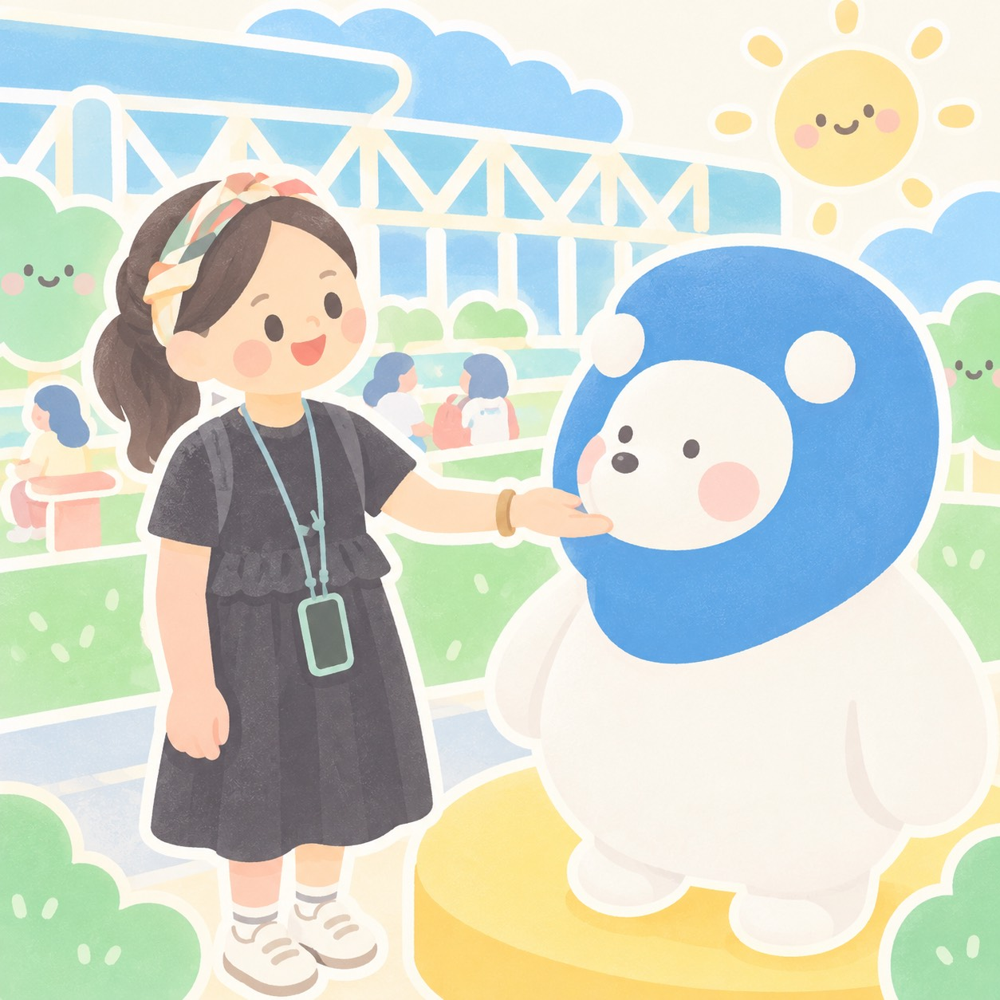
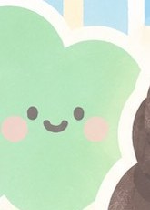

學生自我效能對雙語教育之啟示
（徐楚茜，2023）
從「雙語國家」和「雙語教育」反思臺灣的語言價值觀（何萬順，2020）
APA・研究問題・文獻次標題
研究方法・研究對象・研究結果
兩篇異同整理
提問與討論
徐楚茜（2023）。學生自我效能對雙語教育之啟示。臺灣教育評論月刊，12(6)，108–113。

多數研究顯示雙語教學能提升動機與自我效能、降低語言焦慮，與原先疑慮大相徑庭
國外研究的對象、學科、國家背景、授課時數與臺灣不同，能否推論仍待探討
依學生準備度設計，鼓勵試錯；建立正向歸因，避免習得無助
指明楷模如何達成目標；小組式評量、同儕示範與回饋
聚焦學習表現而非批評個人；引導自我反思
關注內在需求與壓力；營造精熟目標導向的課室
何萬順（2020）。從「雙語國家」和「雙語教育」反思臺灣的語言價值觀。臺灣教育評論月刊，9(10)，1–7。
| 文獻一｜徐楚茜（2023） | 文獻二｜何萬順（2020） | |
|---|---|---|
| 文章類型 | 自由評論（文獻探討） | 主題評論（政策分析） |
| 切入視角 | 心理／教學：Bandura 自我效能理論 | 政策／法律：語言地位與語言價值觀 |
| 關注焦點 | 學生在雙語課的焦慮與自我效能 | 「雙語」是哪雙語？語言是否平等？ |
| 研究對象 | 無實證樣本；關注雙語課學生 | 無實證樣本；分析國家語言政策 |
| 主要主張 | 四項教學要點提升自我效能 | 摒棄「雙語國家」，建立平等語言價值觀 |
| 共同點 | 都提到「英語／語言焦慮」：一篇從課堂心理談，一篇從社會價值觀談 | |
謝謝聆聽！歡迎提問與討論 🌼
徐楚茜（2023）・何萬順（2020）｜報告人：林宛儀